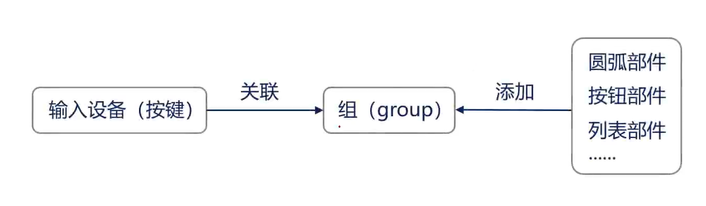

STM32应用
前言
STM32系列单片机作为我使用时间最长，参与比赛最多的单片机，陪伴我通过科协考核，拿过电赛国奖，但一直以来我对于它的使用都比较功利性，着重于功能的实现，忽视了它很多的优秀素质，如我在H7系列中使用过USB虚拟串口，但最近我才知道连基本的STM32F1C8T6都有usb外设，可使用HID模拟键盘、鼠标。
本博客记录一些STM32中的一些使用方法，以作积累。
STM32时钟系统
以STM32F4系列为例，关于时钟的配置在system_stm32f4xx.c中，上电后startup汇编调用SystemInit(void)进而使用SetSysClock(void)配置系统时钟。
（stm32f103也有相关的设置，具体位置可去.h文件中go to define）
在316行左右可配置锁相环,类似下图：1
2
3
4
5
6
7
8
9
10
11
12
13
14
15
16
17
18
19
20/************************* PLL Parameters *************************************/
/* PLL_VCO = (HSE_VALUE or HSI_VALUE / PLL_M) * PLL_N */
/* USB OTG FS, SDIO and RNG Clock = PLL_VCO / PLLQ */
/* SYSCLK = PLL_VCO / PLL_P */
HSE->PPL->SysClock->APHB->外设……
修改锁相环可实现超频。
使用片外FLASH
使用片外flash扩展作为程序空间，如STM32H750VBT6，片内flash仅有128k。
关于程序载入片外FLASH的方法
“多余的”下载方式
我一直觉得使用调试器如Jlink，STlink下载程序虽然高效，但不够方便，特别是有时需要带回寝室开发功能的时候，显得累赘，STlink往往还要使用杜邦线接线。下面是仅需一根Type-c线便可完成调试下载的方案。
但需注意的是：在f4系列中，使用非调试器下载程序疑似会触发其保护机制，导致下载后程序无法执行，需进行一次全片擦除.F1系列则没遇到过这种问题（可能f1的安全等级比较低吧）
- UART1下载
- DFU下载
CubeMX
CubeMX是用来为不同的ide生成初始化代码的软件，如Keil，CubeIDE，甚至是Makefile。注意在CudeMX和CubeIDE的软件库位置应配置为同一处，以便使用共同的固件库等,windows-->preference-->STM32cube-->Firmware Updater。
基本使用
- 选中芯片新建工程
- 修改Debug方式、时钟源、锁相环
- 配置所需外设
- 修改工程适用的IDE，使能为每一个外设生成单独的文件
- 修改包含路径：
Project-->C/C++ General-->Paths and SYmbols调试
相对于传统的Keil，Cube新增了live expression与串行线查看器（Serial Wire Viewer，SWV），前者能实现调试过程中实时查看变量值，后者能实现一个调试串口以及在ide中进行数据可视化，在run configuration中配置，SWV还要在板子中配置Debug模式为Trace Asynchronous Sw。
参考文章1
参考文章2Cube-Ai
HID模块
在CubeMX中配置
虚拟串口
以F4为例子，F1并没有虚拟串口
串口
- 在魔术棒中勾选 USE MicroLIB
- 在stm32f4xx_hal.c中添加：
1
2
3
4
5
6
7
8
9
10
11
12
13
14
15
16
17
18
19
extern UART_HandleTypeDef huart1; //声明串口
// 函数功能: 重定向c库函数printf到DEBUG_USARTx
int fputc(int ch, FILE *f)
{
HAL_UART_Transmit(&huart1, (uint8_t *)&ch, 1, 0xffff);
return ch;
}
// 函数功能: 重定向c库函数getchar,scanf到DEBUG_USARTx
int fgetc(FILE *f)
{
uint8_t ch = 0;
HAL_UART_Receive(&huart1, &ch, 1, 0xffff);
return ch;
}
移植FreeRTOS
教程示例。
USB外设
以STM32F407VET6为例。
注意：外设时钟必须为48MHz或其整数倍，这是USB外设的要求。
LVGL
- Github-LVGL
- 百问网-LVGL
移植
关于移植部分我推荐看正点原子的教程
运行Demo
- 添加\Middlewares\LVGL\GUI_APP\demos和其下你想跑的例程文件夹至工程设置的Include Paths中
- 新建工程分组app，添加你想跑的例程文件夹其下的所有.c文件(stress不用引入asset)
- 在lv_conf.h文件中使能相应的Demo
- 在main文件中包含对应例程的.h文件与启动函数。
优化显示帧率
移植很简单，但关于优化的资料比较少，笔者总结LVGL的优化分为3步
- 更改LVGL缓冲区，使用双缓冲，加大缓冲区
- 更改屏幕刷新周期#define LV_DISP_DEF_REFR_PERIOD 10，
- 优化底层刷屏，由软件改为硬件，而后加上DMA,注意加入DMA后需要使用16bit-swap
使用双缓冲DMA＋SPI的源码：笔者写的例程
实体按键控制

所谓的组就是用来连接输入与控件间的桥梁，如键盘与List，键盘的按键可以映射成上下、确认等。
笔者以按键作为例子：
它比较特殊，按照LVGL的处理逻辑，按键是被映射成屏幕上的一个点，按一下按键，相当于在屏幕对应位置点了一下，因此它不需要初始化组。
使用步骤：
- 配置板子的按键接口，返回是否按下，例如：
1
2
3
4
5
6
7
8
9
10
11
12
13
14
15
16
17
18
19
20
21
22
23
24
25
26
27
28
29
30
31
32//按键初始化函数
void KEY_Init(void)
{
GPIO_InitTypeDef GPIO_InitStructure;
RCC_AHB1PeriphClockCmd(RCC_AHB1Periph_GPIOA, ENABLE);//使能GPIOA,GPIOE时钟
GPIO_InitStructure.GPIO_Pin = GPIO_Pin_0;
GPIO_InitStructure.GPIO_Mode = GPIO_Mode_IN;
GPIO_InitStructure.GPIO_PuPd = GPIO_PuPd_DOWN;
GPIO_Init(GPIOA, &GPIO_InitStructure);
}
u8 KEY_Scan(void)
{
if( SET == GPIO_ReadInputDataBit(GPIOA, GPIO_Pin_0) )
{
/* 延迟消抖 */
delay_ms(20);
// while(GPIO_ReadInputDataBit(GPIOA, GPIO_Pin_0) == SET) // 等待按键松开
// {
// }
/* 延迟消抖 */
delay_ms(20);
return 1;
}
return 0;
} - 在lv_port_indev_templ.c中配置中，更改define使能本组件，使能Button相关的驱动，失能无用的，如触摸编码器等。
- 在初始化驱动处，增加自己编写的按键接口初始化，修改按键所映射的点。
- 在main.c中包含在lv_port_indev_templ.h并初始化组件：
1
lv_port_indev_init();
使用SquareLine Studio
注意：除了配置长宽像素长度外，如果使用DMA传输数据，颜色深度需要使用16bit-swap以适配数据大小端，在lvgl工厂目录下新建一个UI文件夹，把squareline生成的丢进去，包含下头文件，主函数加个ui_init()就行，这个软件只是帮你做了些重复工作，具体的实现不能弃之不管，还是要go to define看一看的。